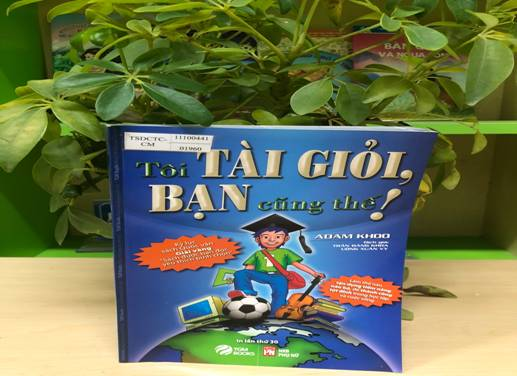

GIỚI THIỆU SÁCH THÁNG 10/ 2021: TÁC PHẨM “TÔI TÀI GIỎI, BẠN CŨNG THẾ” TÁC GIẢ ADAM KHOO

Tôi tài giỏi, bạn cũng thế! (nhan đề gốc tiếng Anh: I Am Gifted, So Are You!) là quyển sách bán chạy nhất của doanh nhân người Singapore Adam Khoo, viết về những phương pháp học tập tiên tiến. Quyển sách đã được dịch ra hàng chục thứ tiếng, trong đó Tôi tài giỏi, bạn cũng thế! là phiên bản tiếng Việt được dịch bởi hai dịch giả nổi tiếng Trần Đăng Khoa và Uông Xuân Vy của TGM Books. Tại Việt Nam, quyển sách đã trở thành một hiện tượng giáo dục trong những năm 2009 - 2011 và đạt được nhiều thành tựu trong lĩnh vực xuất bản, tạo ra kỷ lục mới cho ngành xuất bản Việt Nam với hơn 200.000 bản in được bán ra và hơn 400.000 e-book được phân phối.
“Dành tặng một tài năng tiềm ẩn trong bạn” - đó là lời đề tặng tác giả của cuốn sách một huyền thoại của ngành quản trị kinh doanh gửi cho những ai có ý chí vượt qua số phận.
Lần đầu xuất bản năm 1988, Adam đang là sinh viên ngành Quản trị kinh doanh trường Đại Học Quốc Gia Singapore, là một trong 1% sinh viên dẫn đầu trường và được chọn vào chương trình phát triển tài năng có danh tiếng. Hiện tại Adam Khoo là cử nhân danh dự về quản trị kinh doanh, sở hữu và quản lý 4 ngành kinh doanh với tổng thu nhập 20 triệu đô và là giám đốc các công ty Adam.com - Tiếp thị, Event Gurus, tổ chức sự kiện lớn, Adam Khoo learning technologies Group. Anh còn là diễn giả nổi tiếng ở Châu Á làm việc với hàng trăm trường học, công ty đa quốc gia, các lĩnh vực lân cận và là tỉ phú trẻ nhất, giàu có nhất ở Singapore.
Một người tài giỏi và thành công như thế chắc chắn từ nhỏ đã là một thiên tài với điểm số cao ngất ngưởng? Nhưng có một nghịch lý ở đây rằng Adam Khoo từng là một học sinh kém xếp hạng 156/160 ở trường không mấy danh tiếng ở Singapore và anh còn bị coi là bất tài vô dụng.
“Thật không biết phải làm sao với con trai chúng tôi, nó được gửi đi học thêm khắp nơi mà vẫn làm bài thi tệ hại. Chúng tôi tự hỏi sau này nó có làm nên trò trống gì không nữa.” Đó chính là những lời cha mẹ Adam đã từng than vãn về sự kém cỏi và kết quả thi cử thảm hại của cậu trong những năm về trước.
Lần đầu đọc tiểu sử của Adam tôi cũng không tin đó là sự thật, nhưng càng đọc tôi càng bị lôi cuốn. Quả thật, tài năng vượt bậc của Adam đó là khả năng hệ thống những phương pháp học và cách củng cố niềm tin từ chính bản thân rồi truyền đạt cho người khác một cách vô cùng hiệu quả mà bất kỳ học sinh nào cũng có thể áp dụng.
Đến với cuốn sách “Tôi tài giỏi, bạn cũng thế” sẽ giúp bạn tìm ra giải pháp tốt nhất cho mọi vấn đề, giúp bạn nhận ra cách thức để thành công. Tác giả sẽ giúp bạn đọc khám phá ra những tiềm năng của bản thân và phát huy nó. Điều đặc biệt từ cuốn sách là sẽ cung cấp những phương pháp học thông minh như: Sơ đồ tư duy - để phát huy cả não trái và não phải, phát triển trí nhớ siêu việt - để ghi nhớ sự kiện, con số một cách dễ dàng, thành thạo việc quản lý thời gian và xác định mục tiêu.
Nếu bạn muốn “tài giỏi” trong các phương pháp học tập và suy nghĩ vượt bậc hãy đọc quyển sách này, bạn sẽ học được:
1. Tăng cường sự tự tin và làm chủ cuộc sống của bạn.
2. Áp dụng các công cụ học tập bằng cả não bộ như sơ đồ tư duy.
3. Phát huy trí nhớ siêu việt để ghi nhớ các sự kiện, con số.
4. Thành thạo việc quản lý thời gian và xác định mục tiêu.
5. Khả năng đạt được những thành tích cao nhất.
6. Áp dụng các phương pháp thi cử để “chiến đấu” và “chiến thắng” trong các kỳ thi quan trọng.
Cuốn sách gồm 4 phần:
Phần 1: “Tôi Tài Giỏi, Bạn Cũng Thế”: điều quan trọng nhất để có được thành công là niềm tin của bạn.
Phần 2: “Những phương pháp học siêu đẳng”: Những phương pháp học dễ dàng tiết kiệm thời gian và nhớ lâu sẽ được giới thiệu đến các bạn qua sơ đồ tư duy
Phần 3: “Động lực cá nhân bạn”: Động lực mạnh mẽ giúp bạn vượt qua sự lười biếng và tạo quyết tâm tức thời để cán đích trong các kì thi.
Phần 4: “Phương pháp thi cử: Đây là chặng cuối của quá trình luyện tập và gặt hái kết quả của bản thân.
Với những dẫn chứng thực tế hình ảnh màu sắc sinh động kèm theo những bài thực hành hiệu quả, chỉ cần đọc qua một lần chắc chắn bạn sẽ không thể nào quên được “Tôi Tài Giỏi, Bạn Cũng Thế”.
Đây là những nấc thang mà chính tác giả đã vượt qua để thành công trong cuộc sống. Bạn hoàn toàn có khả năng xây dựng cho mình những nấc thang như thế. Như Adam Khoo đã nói: “Chúng ta sinh ra là những thiên tài, vấn đề làm sao tạo dựng được sức mạnh tiềm ẩn bên trong bạn”. Hãy cùng khám phá điều ấy qua từng trang sách “Tôi tài giỏi, bạn cũng thế”.
Cuốn sách Tôi tài giỏi bạn cũng thế của tác giả Adam Khoo. Đây chính là một cuốn cẩm nang các phương pháp hỗ trợ bạn trẻ tìm ra cách học thông minh và tư duy đúng đắn nhất. Nếu bạn muốn thành công, đừng quên đọc cuốn sách này và chia sẻ những điều khiến bạn cảm thấy tâm đắc nhất.